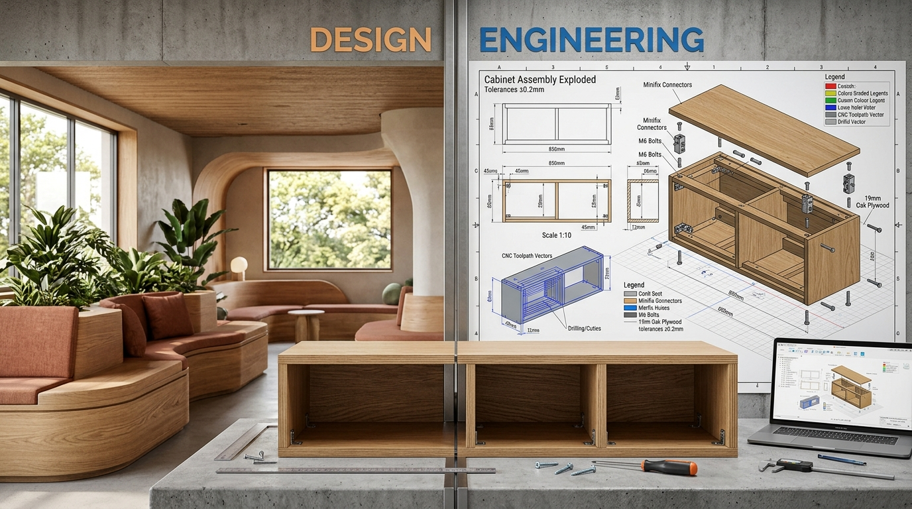
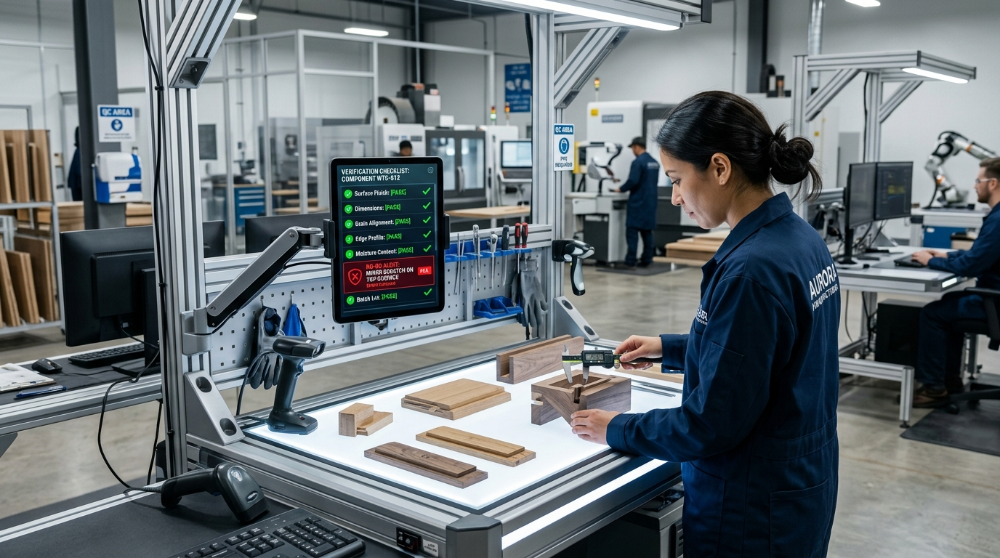

Flujo Maestro Bulldog Design
De la Venta a la Fabricación de Alta Precisión en Cabinet Vision
"La precisión del resultado final depende directamente de la calidad, completitud y estabilidad de la información utilizada desde el inicio."
Puntos Clave para el Equipo:

Diseño vs Ingeniería:
Dos Misiones Técnicas Complementarias
Diseño Responde:
¿Qué producto debemos fabricar y cómo resolverlo conceptualmente?
Ingeniería Responde:
¿Cómo fabricaremos, parametrizaremos y mecanizaremos ese producto?
"Ingeniería no debe utilizarse como una extensión de Diseño para terminar decisiones que aún continúan abiertas."

Matriz de Responsabilidades y Alcances
Caso Práctico de Estudio: El Mueble con Curva Orgánica
Diseño define la curva exacta en planta, su radio de curvatura, cómo se encuentra con los paños rectos, la ergonomía y qué textura o acabado estético debe exhibir al usuario final.
Ingeniería determina las cerchas estructurales ocultas, el espesor del sustrato curvable, el radio de compensación de broca CNC, el laminado que no se quiebre en curvadora y el mecanizado de ensamble.
Simulador de Gates Anti-Error
¿Tu Proyecto Está Listo para Avanzar?
Prueba en vivo la política estricta de contención. Marca cada requisito técnico verificado: si falta un solo elemento crítico, el sistema activa automáticamente la alerta NO-GO BLOQUEADO para salvaguardar la operación.

Los 6 Bloqueos Maestros (NO-GO) & Matriz de Retrabajo
Un error no detectado en Compras o Diseño se multiplica exponencialmente conforme avanza hacia la fábrica. Un cambio tardío en máquina puede costar hasta 100x más que una corrección previa.
Detalle Técnico de los 6 Puntos de Detención Obligatoria
Costo Exponencial del Retrabajo por Etapa de Detección
Demostración empírica de por qué la rigurosidad debe iniciar en la información de entrada y no en el corte.